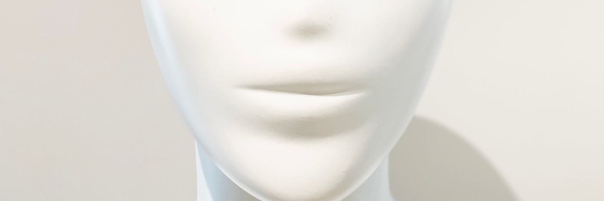
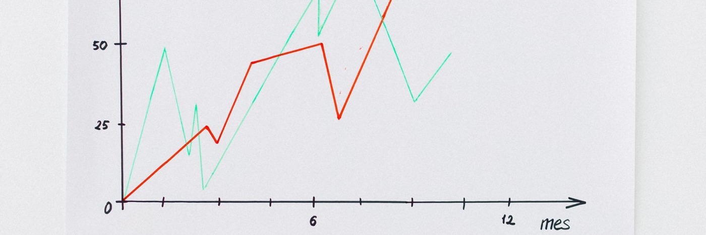

01项目Works
造物
五件自己会用的工具，都在 GitHub 上。
按最近更新排序。
zipfold
macOS 压缩 / 解压工具。做得克制一点，只处理手边那点文件。
life-log
把视频、录音、照片、文字和 PDF 按时间线汇成一份 Markdown 日志，给日子留个底。

genshin-agent-soul
原神角色人格蒸馏计划。97 个高拟真 AI 角色人格文件，把叙事内核写成 SOUL.md，给 Agent 框架直接用。

TrendRader
多平台热点聚合，加一层基于 MCP 的 AI 分析。监控 35 个平台，支持自动推送和自然语言追问。
共 05 件 · 按最近更新排序
全部仓库 ↗
我把读过的书“蒸馏”成了随问随答的知识库书架上有不少读过的书。如果现在让我复述其中任何一本的论证，大概只能说出一句核心主张。
升级为 Jekyll 4.3.4 并改为 GitHub Actions 构建前几天有人问我，博客到底是用什么写的。我说 Jekyll。这个回答不能算错。
黑色生命力心理学上有个词，叫黑色生命力。听名字不像好词。黑色，生命力，搁在一块儿，感觉是从烂泥里长出来的东西。
博客换新装了这个博客从 2012 年写到现在，中间换过一次皮，然后那层皮一穿就是快十年。
一个人在任何年龄都要提防的人生十大陷阱不能独立却想要自由；不读书却爱思考；缺乏自律却渴望卓越出众。
动力电池 SOC 电化学分析：为什么建议不要经常充至 100%？在全球交通全面电动化的转型浪潮中，锂离子电池作为核心的储能载体，其全生命周期的健康状态直接决定了。
如果你兴趣广泛，别在未来 2-3 年浪费时间原文：If you have multiple interests, do not waste the next 2-3 years。作者：Dan Koe。
How to fix your entire life in 1 day 如何在一天内重启人生油管大神 Dan Koe 最新出的长文，值得阅读 3 遍以上。不废话，上干货。
奇瑞 ROBOX：从 X25 到“圆盒子”，一台概念车背后的十年布局一看已经有了地气的新车就忍不住研究，今天我们来看看，奇瑞 iCAR 展台上这台 ROBOx。
OpenClaw 与 Obsidian 知识库联动实践为什么本地 Markdown 文件知识库最适合 OpenClaw，以及我的使用思路。